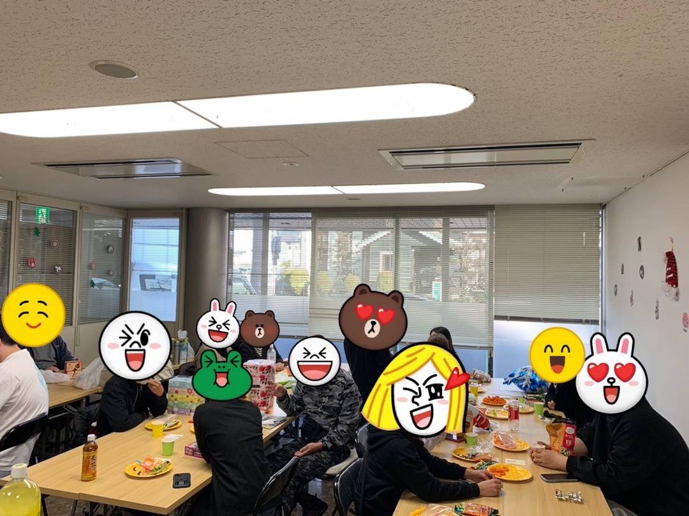
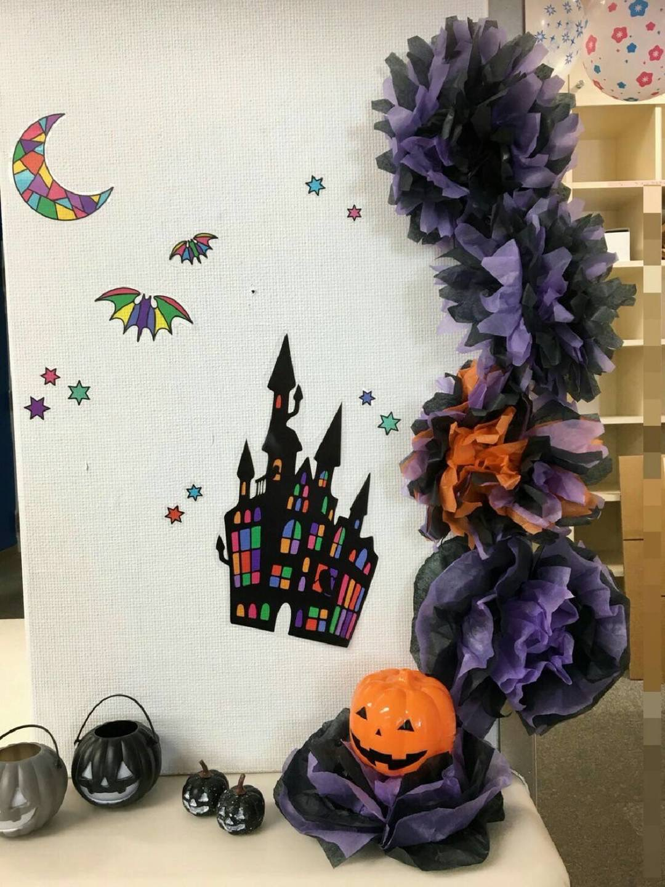
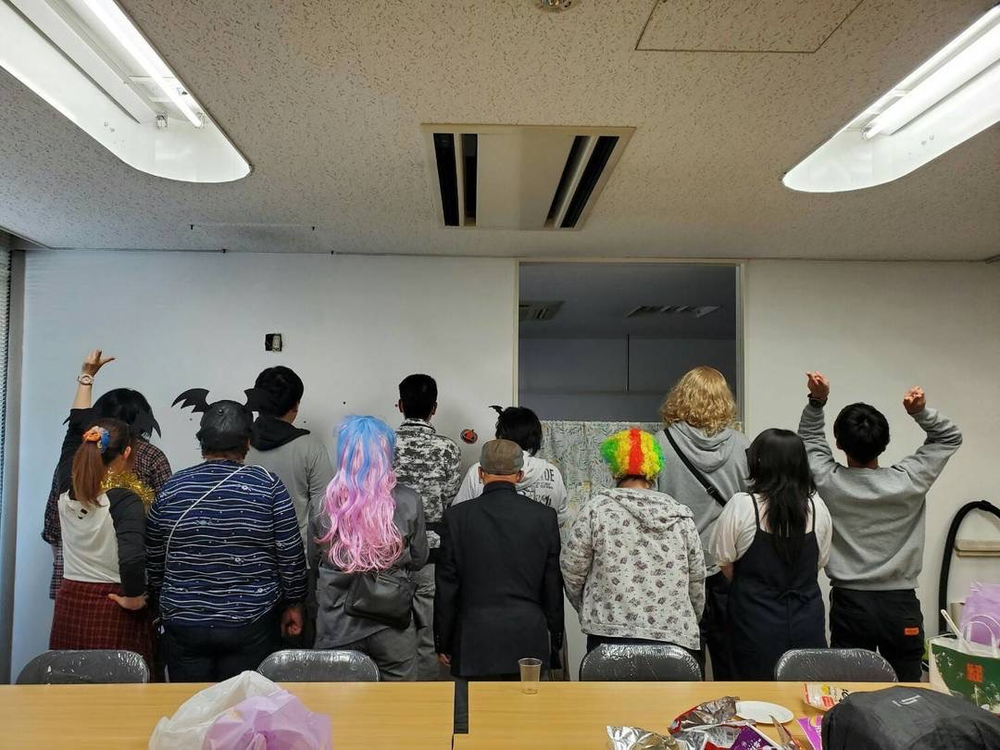

基本情報
事業所名：就労継続支援B型 アリーノ
所在地：奈良県奈良市南京終町1-168-1
電話番号：0742778194
開所時間：9:00〜18:00（月〜金）
定休日：土日祝日
利用対象：障がいのある方で、就労継続支援B型のサービスをご希望の方
サービス内容：軽作業を中心に、利用者のペースに合わせた支援を提供します。
スタッフ：介護福祉士・救急救命士が常駐し、安心して過ごせる環境を整えています。
送迎：無料送迎サービスあり（ご希望のエリアはお気軽にご相談ください）
アリーノの理念・特徴
就労継続支援B型事業所 アリーノは、奈良市にある障がいのある方の就労を支援する事業所です。
「蟻の思いは天まで届く」と言うように
たとえ小さくても、静かでも、まっすぐな思いは天に届く。と言われるように
そんな信念を、「アリーノ」という名前に込めました。
私たちは、一人ひとりの歩みに寄り添い、共に希望の道をつくっていきます。
就労が困難な方でも、ご自身のペースで日中の居場所としてご利用いただけます。
イベント紹介
定期的にお菓子パーティやビンゴ大会、たこ焼きパーティなどを開催。
幅広い年代の方が楽しく交流しています。
イベントの様子はこちら





お問い合わせ
電話番号：0742778194
営業時間：9時〜18時
ご利用や見学に関するご質問・ご相談など、お気軽にお問い合わせください。
📩 お問い合わせフォームへ